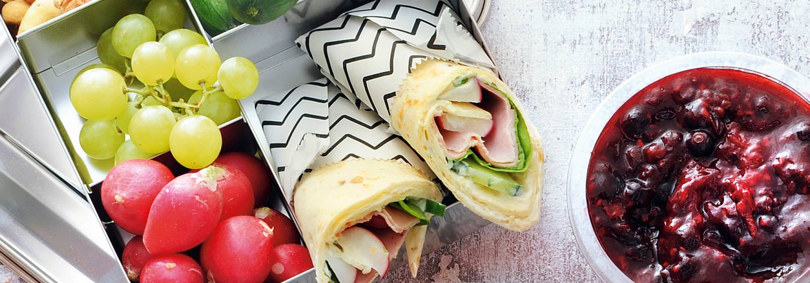

Boterhammen in de broodtrommel saai? Vervang ze door deze meergranenwrap. Voortaan vast de nummer één van broodtrommelgerechten.

✔ 1 el roomkaas bieslook light
✔ 1 meergranenwrap
✔ 2 radijsjes
✔ ¼ komkommer
✔ 1 blaadje kropsla
✔ 1 plakje achterham
✔ 1 sprietje verse basilicumblaadjes
Verdeel de roomkaas over de wrap. Halveer de radijsjes en de komkommer en snijd in plakjes. Verdeel de kropsla, de ham, de radijsjes en de komkommer over de wrap. Scheur de basilicumblaadjes in stukjes en strooi erover. Rol de wrap op.
bewaartip:
Radijsjes en komkommer over? Geef ze mee in de broodtrommel. Snijd de komkommer wel eerst in dikke plakken.
Energie: 175 kcal
Eiwit: 8 g
Koolhydraten: 23 g
Vet: 5 g
Natrium: 370 mg
Vezels: 2 g